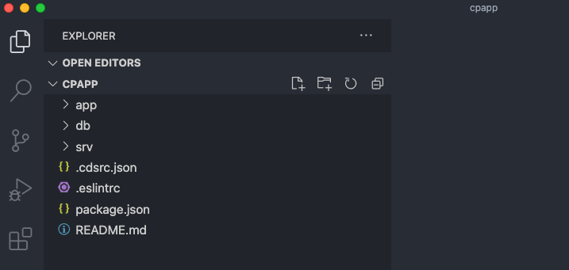
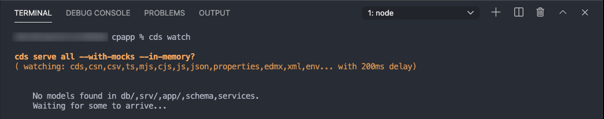
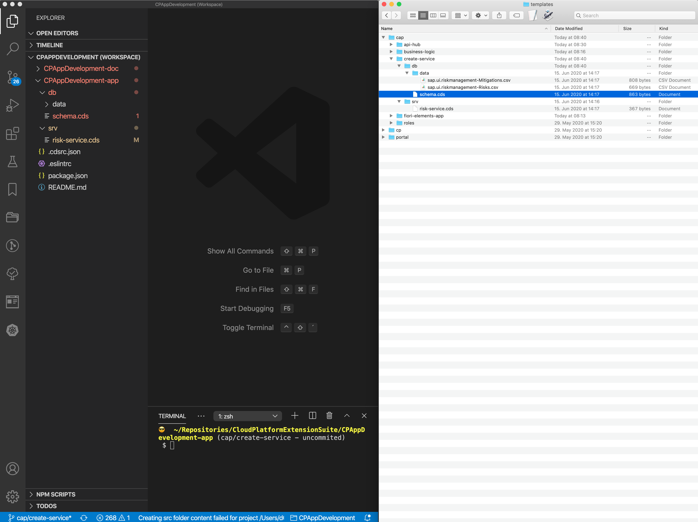
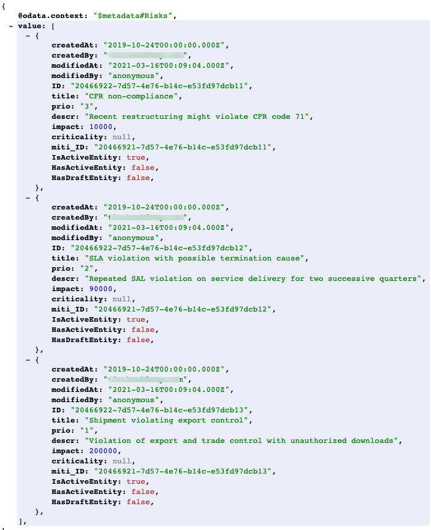

Create a CAP-Based Service
Prerequisites
Additional Documentation
In this section, you create a new CAP-based service, which exposes the OData V4 protocol. To do so, you use CAP's tooling cds init and cds watch in a terminal.
Create and Initialize the Project
-
Open a terminal.
-
Create a directory
<myDirectory>on your computer, where you want to develop the app. -
Navigate to the previously created directory:
cd <myDirectory> -
Create an initial CAP project by executing the command
cds init. It creates the project in a new folder calledcpapp:cds init cpapp -
Navigate to the project folder:
cd cpapp -
Open the project in VS Code:
code .The project looks like this in VS Code:

-
In VS Code choose Terminal → New Terminal from its menu.
A new terminal opens in the lower right part of the VS Code screen.
-
In the VS Code terminal, run:
npm install -
In the VS Code terminal, start a CAP server:
cds watchIn case you get the error:
cds : File <npmIstallDirectory>\cds.ps1 cannot be loaded because running scripts is disabled on this system.If you get the error
cds : File <npmIstallDirectory>\cds.ps1 cannot be loaded because running scripts is disabled on this system.after you runcds watch, you can run the command:Set-ExecutionPolicy -ExecutionPolicy Bypass -Scope CurrentUserThis will change the script execution policy for your user to
Bypassdirectly from the VS Code terminal. To learn more about execution policies, see About Execution Policies.The CAP server serves all the CAP sources from your project. It also "watches" all the files in your projects and conveniently restarts whenever you save a file. Changes you've made will immediately be served without you having to do anything.
The screen now looks like this:

The CAP server tells you that there’s no model yet that it can serve. You add one in the next steps.
Add Files to the Project
-
Open the Finder on Mac or the Explorer on Windows and navigate to the directory that you’ve created for the tutorial.
This is the
<MyTutorialDirectory>directory created in section Get Started. It should be a subfolder of your project's parent directory. -
Open the folder
templatesand keep it open as you copy a number of files from there. For this part of the tutorial and others, it’s probably best if you place it next to your VS Code instance like this:
Alternatively, you can open it as a second folder in your VS Code project: File → Add Folder to Workspace....
-
Copy the file
schema.cdsfromtemplates/cap/create-service/dbto thedbfolder of your app.This is the code:
namespace sap.ui.riskmanagement; using { managed } from '@sap/cds/common'; entity Risks : managed { key ID : UUID @(Core.Computed : true); title : String(100); prio : String(5); descr : String; miti : Association to Mitigations; impact : Integer; criticality : Integer; } entity Mitigations : managed { key ID : UUID @(Core.Computed : true); description : String; owner : String; timeline : String; risks : Association to many Risks on risks.miti = $self; }It creates two entities in the namespace
sap.ui.riskmanagement:RisksandMitigations. Each of them has a key calledIDand several other properties. A Risk has a mitigation and, therefore, the propertymitihas an association to exactly one Mitigation. A Mitigation in turn can be used for many Risks, so it has a "to many" association. They key is automatically filled by the CAP server, which is exposed to the user of the service with the annotation@(Core.Computed : true).Notice how the CAP server reacted to dropping the file. It now tells you that it has a model but there are no service definitions yet and, thus, it still can’t serve anything. Next, you add a service definition.
-
Copy the file
risk-service.cdsfromtemplates/cap/create-service/srvto thesrvfolder of your app.The content of the file looks like this:
using { sap.ui.riskmanagement as my } from '../db/schema'; @path: 'service/risk' service RiskService { entity Risks as projection on my.Risks; annotate Risks with @odata.draft.enabled; entity Mitigations as projection on my.Mitigations; annotate Mitigations with @odata.draft.enabled; }It creates a new service
RiskServicein the namespacesap.ui.riskmanagement. This service exposes two entities (again just neglect the commented part for the business partner):RisksandMitigations, which are exposing the entities of the database schema you’ve created in the step before.If you again look at the terminal, you see that the CAP server has noticed the new file and now tells us that it serves something under http://localhost:4004.
-
Open a browser with http://localhost:4004 and you see:

You may have to stop and restart the
cds watchcommand. -
Choose the
$metadatalink.You see the OData metadata document of your new service. So, with just the two files for the database schema and the service exposure you added to your project, you've already got a running OData service! You might wonder why the service itself is called
riskeven though in the file it’s calledRiskService. This is a convention in CAP, the service suffix is subtracted from the name.If you now choose the
Riskslink, you only get this:{ @odata.context: "$metadata#Risks", value: [ ] }So, there’s no data yet. This is because so far, your model doesn’t contain any data. You add some now.
-
Copy the folder
datafromtemplates/cap/create-service/dbto thedbfolder of your app. If VS Code asks you whether to copy the folder, confirm.You’ve now added two comma-separated value (CSV) files that contain local data for both the
Risksand theMitigationsentities. A quick look into thesap.ui.riskmanagement-Risks.csv(the name consists of your namespace and the name of your database entity from theschema.cdsfile) file shows data like this:ID;createdAt;createdBy;title;prio;descr;miti_id;impact 20466922-7d57-4e76-b14c-e53fd97dcb11;2019-10-24;tim.back@sap.com;CFR non-compliance;Fred Fish;3;Recent restructuring might violate CFR code 71;20466921-7d57-4e76-b14c-e53fd97dcb11;10000 ...The first line contains all the properties from your
Risksentity. While the other ones are straight forward, consider themiti_idproperty. In your entity, you only have amitiproperty, so where does it come from?mitiis an association toMitigations, asMitigationscould have several key properties, the association on the database needs to point to all of these, therefore the CAP server creates a property<AssociationProperty>_<AssociatedEntityKey>for each key.As always, the CAP server has noticed the change.
You may have to stop and restart the
cds watchcommand. -
Revisit the
Risksentity http://localhost:4004/service/risk/Risks in your browser, you now see the data exposed:
And that's it: You’ve now got a full blown OData service, which complies to the OData standard and supports the respective queries without having to code anything but the data model and exposing the service itself.
The service is completely exposed without any authentication or authorization check. You extend the service later with such checks.
The result of these steps can be found here.